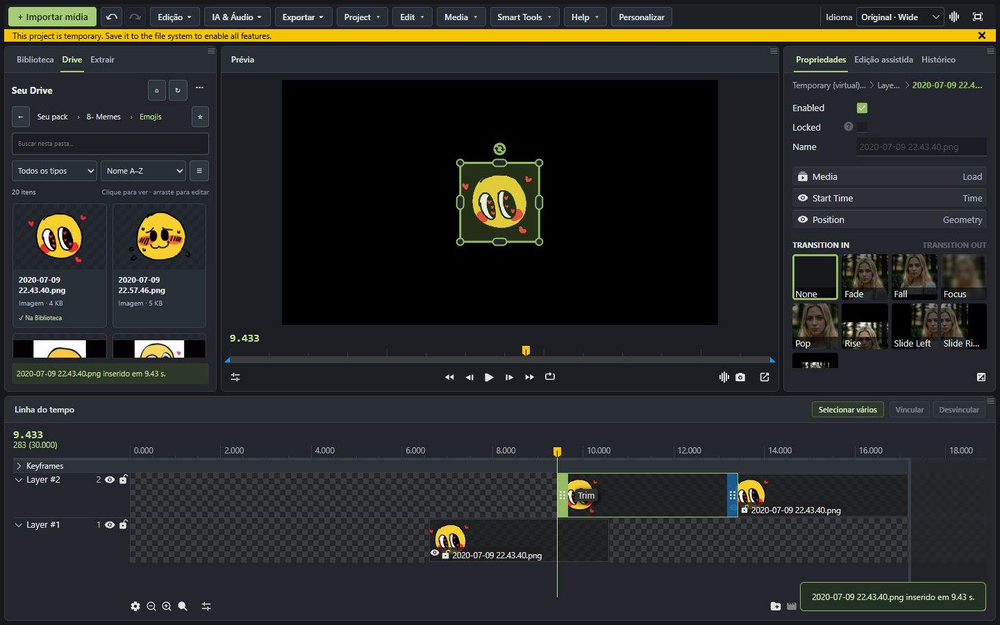
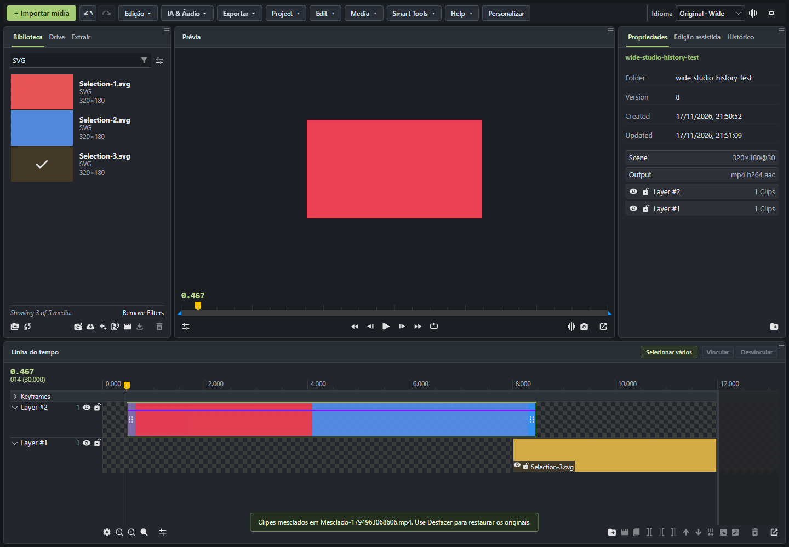
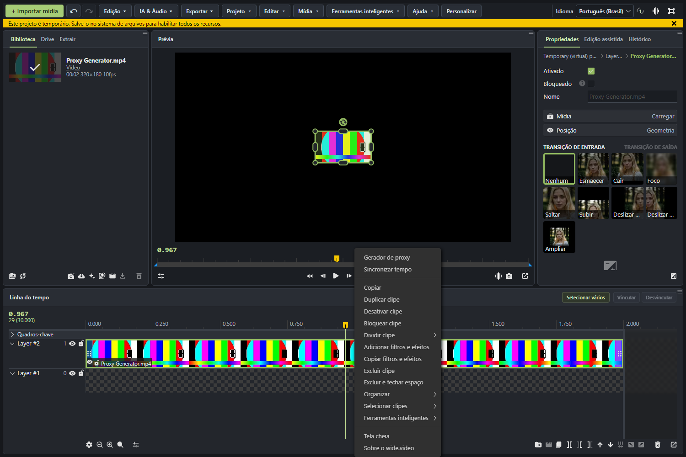
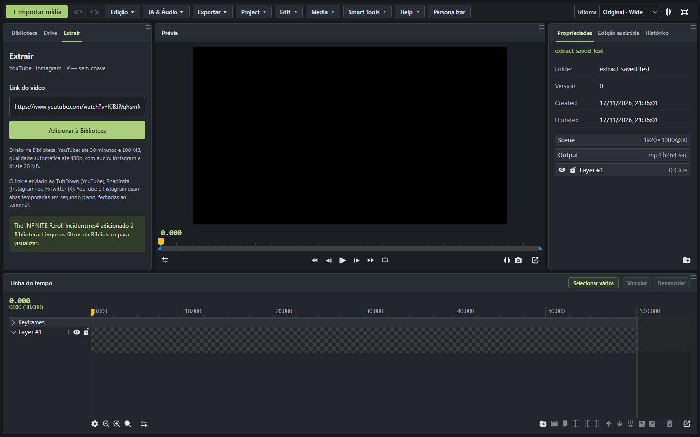

Checked on November 17, 2026, on Windows with Chrome for Testing and the unpacked extension installed. Primary editor: Wide 1.8.0. Older 1.7.12 is covered by compatibility fixtures and a live direct-text smoke test.
The release preserves the existing feature set, adds selected-clip merging, and separates the official API integration from compatibility code. The audit fixed an Escape/release race in Drive dragging, including cancellation before a delayed handshake. It also fixed history controls staying disabled after a merge batch: batch completion now explicitly invalidates the shared UI, and merge waits for the final native save rather than a fixed delay.
| Feature | Validation | What was checked |
|---|---|---|
| Project/API bridge | Live editor + unit | Official project read, selection snapshot, verified seek, serialized operations, cache invalidation and stale-project rejection. |
| Text and editing shortcuts | Live editor | One-click text without creation dialog; split; ripple delete without confirmation; native export dialog. |
| Rectangle selection | Live editor | Live grow/shrink, Shift addition, Ctrl selection, Escape, empty-area double click, Library selection and starting on gap ×. |
| Linked clips | Live editor | Right-click link/unlink, either member moves the group, locked-member guard, zero boundary, unchanged neighbor, undo/redo and persistence after reload. |
| Merge clips | Live editor + decoded output | Three sources become one MP4; selected range, relative timing, two audio tones and red/blue frames verified. Neighbor preserved. Cancel and one-step undo/redo verified. |
| History | Live editor + unit | Direct movement undo keeps the native project object; snapshot fallback; branch invalidation; zoom, scroll and playhead retained; history list and direct deletion. |
| Menus and customization | Live editor + UI | Matching menus, exclusive opening, reorder/hide and reload persistence; native node identity preserved; compact widths. |
| Languages | Live editor + unit | Six locale choices; Portuguese menus/submenus/settings; original restoration; protected file names; hover stable at 1000/1280/1500 pixels. |
| Translation performance | Instrumented DOM test | 1,000 existing controls: inserting one control traverses only that subtree; idle performs no scans; language change restores the full interface. |
| Drive | Live public pack + UI | Folder navigation, thumbnails, preview, timeline insertion, media reuse, virtual layer, fast pointer gesture, invalid target, release inside frame and immediate Escape cancellation. Search, favorites and light-copy size guard also covered in UI tests. |
| YouTube extraction | Live external service | KjBJjVghsmM: 20:44 source, 93,893,860-byte MP4, 854×480, video and audio confirmed in Wide. Saved project, filtered Library and worker-restart recovery passed; no Downloads copy. |
| Instagram / X extraction | Live external services | Public aye83DjauH Instagram post and X 1790637656616943991 imported once into Library; native media probing confirmed. Invalid/unavailable Instagram link correctly reported a provider error. |
| Silence / captions | Live native tools | Synthetic WAV imported; silence detection composed multiple clips; undo restored the original; a captions clip was created. Whisper model transcription was not run. |
| Saved points / navigation panel | Automated UI + storage | Save, navigate, remove, export/import storage validation, project isolation, reopen and persistence covered by the point and UI suites. |
| Assisted editing / NVIDIA | Automated transport + provider fixtures | Explicit application, tab binding, unsupported actions and uncertain results covered. A fresh paid/credentialed NVIDIA request was not performed. |
| Transfer and recovery | Automated + live long-video case | Chunk ordering/size validation, duplicate finish protection, probing receipts, project-switch guards and recovery after worker restart. |
From extension: install dependencies and the Chrome for Testing executable expected by the live scripts, then run npm run build, npm test, npm run test:ui, npm run test:live and npm run test:external. Live logs and results are written under ignored .local/validation; diagnostic captures remain local. Optional Drive/provider permissions are granted only in disposable test manifests. Production still requests them from the user.
External download services can change, refuse a post or request human verification. These tests confirm working examples on the test date, not every link. Live tests use synthetic projects and public media, not the user's existing projects. No RAM or real-time rendering speed percentage is claimed. Full native snapshot undo can still rebuild the project when a direct move cannot safely be used. MP4 merging does not preserve transparency. Edge and Opera were not separately exercised in this run.



